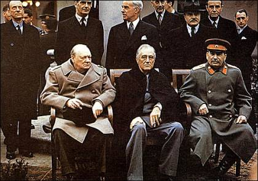

富兰克林·德拉诺·罗斯福（Franklin Delano Roosevelt，1882年1月30日-1945年4月12日） ，简称为FDR，华人称为“小罗斯福”，美国第32任总统(1933-1945)，美国历史上首位连任四届的总统。
1932年击败胡佛，当选为美国总统。在1930年代经济大萧条期间，罗斯福推行新政以提供失业救济与复苏经济，从经济危机的深渊中挽救了美国。珍珠港事件发生后，罗斯福力主对日本宣战，以租借法案使美国转变为“民主国家的兵工厂”。罗斯福对塑造战后世界秩序发挥了关键作用，其影响力在雅尔塔会议及联合国的成立中尤其明显。
1945年，罗斯福因脑溢血逝世，死后由哈里·杜鲁门接任美国总统。
罗斯福被认为是美国历史上最伟大的总统之一，美国在线曾于2005年举办“最伟大的美国人”票选活动，富兰克林·德拉诺·罗斯福被选为美国最伟大的人物中的第十位[4]。
1882年，富兰克林·德拉诺·罗斯福出生于美国纽约州。
1900年，罗斯福进入哈佛大学，攻读政治学、历史学和新闻学。
1904年，罗斯福进入哥伦比亚法学院。
1905年3月，与埃莉诺（西奥多·罗斯福总统的侄女）结婚。
1907年，罗斯福从法学院毕业，进入律师事务所任律师。
1910年，罗斯福以美国民主党人的身份开始涉足政界。
1913年，威尔逊总统任命他为海军助理部长。
1919年，罗斯福为威尔逊的国际联盟计划奔走游说，结果导致竞选副总统失败。
1928年，罗斯福重返政界，参加州长竞选而险胜。
1932年11月，在经济大危机的背景下作为民主党总统候选人参加竞选，提出了实行“新政”和振兴经济的纲领。
1933年，罗斯福宣誓就职，提出了旨在实现国家复兴和对外睦邻友好的施政方针。罗斯福入住白宫后，推行以救济、改革和复兴为主要内容的“罗斯福新政”。
1933年3月至6月，美国国会应罗斯福总统之请召开特别会议，以惊人的速度先后通过《紧急银行法》《联邦紧急救济法》《农业调整法》《全国工业复兴法》《田纳西河流域管理法》等。
20世纪30年代中期，德、意、日法西斯在欧洲和亚洲形成两个战争策源地。然而，此时的美国盛行孤立主义。
1937年10月，罗斯福在芝加哥参加新建大桥的落成典礼时发表“隔离演说”，向美国公众指出了战争恐怖的存在。
1938年12月，在罗斯福的倡议下，泛美会议通过《利马宣言》，反映出美洲国家反法西斯的决心。
1940年5月，英法联军经德军打击而溃败。罗斯福要求国会追加国防拨款，加强战备。
1940年总统竞选初期，罗斯福的全部精力集中在扩军备战方面，在罗斯福的影响下，国会批准陆海军的扩充，伯克一沃兹沃思选征兵役法得到通过。
1940年7月，当民主党人在芝加哥举行总统提名会议时，代表们仍不清楚罗斯福是否会寻求第三个任期。1940年民主党全国代表大会在第一轮投票中重新提名了罗斯福作为总统候选人。时由于世界战争频繁，为保证美国对外政策的一致性，美国人特别是孤立主义者不赞成领导人中途易人，所以55%的选民还是选择了罗斯福，罗斯福第三次当选为美国总统。
1941年1月6日，罗斯福提请国会“授权并拨给充分的款项，去制造更多的军火和多种军用物资，以供移交现在同侵略国家进行实际战斗的国家”。
1941年3月11日，国会通过的租借法案经总统签署而生效。租借法案的通过，使美国处于非交战状态，是美国积极干预反法西斯战争的重要里程碑。
1941年12月7日，日本偷袭珍珠港，太平洋战争爆发。美国和英国向日本宣战。次日，德国和意大利则向美国宣战。美国正式参加第二次世界大战。
1942年元旦，在罗斯福的倡导下，美（罗斯福）英（丘吉尔）苏（李维诺夫）中（宋子文）等26个国家的代表在华盛顿签署《联合国家宣言》，国际反法西斯同盟正式形成。
1942年上半年，罗斯福不顾马歇尔的反对，和丘吉尔一道决定盟军实施北非登陆计划，灭了该区的德意军队。
1943年初，罗斯福和丘吉尔率领有关指挥与参谋人员赴摩洛哥的卡萨布兰卡，举行军事会议。
1943年3月，罗斯福即与艾登谈及战后成立维持世界和平与安全的国际组织的问题。在罗斯福的努力下，国会同意美国参加此种国际组织。
1943年11月22日至1943年11月26日，罗斯福与英国首相丘吉尔、中国国民党总裁、中华民国国民政府主席和军事委员会委员长蒋介石在埃及首都举行开罗会议。
1944年6月5日（因气候原因而由5月1日延迟），盟军在法国诺曼底登陆，实施"霸王"作战计划，欧洲第二战场形成。
1944年11月17日，罗斯福再次以53%的得票率第四次当选为美国总统。
1945年2月4日至2月11日，罗斯福、丘吉尔、斯大林在克里米亚半岛举行雅尔塔会议。
1945年4月12日罗斯福在佐治亚州的温泉因突发脑溢血去世。
早在罗斯福上台之初，在其就职演说中声称：“在世界政治领域里，我将使本国遵循睦邻政策。”随后，美国对拉美政策作了某些调整。主要包括两个方面：在政治上，主张任何美洲国家不应干涉另一个美洲国家的内政；在经济上，则要奉行美洲国家之间互惠贸易协定。
1941年8月，罗斯福和英首相丘吉尔会于军舰上，宣布《大西洋宪章》。
1941年12月，太平洋战争爆发后，罗斯福动员了全部工业积极从事军事生产。
1943年，罗斯福、丘吉尔与斯大林在德黑兰会晤。
1945年2月，三巨头再度在克里米亚的雅尔塔会晤，那时欧洲战场战争已近尾声。
在大西洋会议上，罗斯福就有意建立一个联合的组织机构来避免战争，并且希望战后能建立一种所有民族都能共享的和平。
1942年春天，苏联外交部长访美时，罗斯福表达了自己关于战后安全结构的设想。他认为美国、苏联、英国还有中国应当维持世界的治安，“如果有破坏和平的事发生，‘四警察’应当首先封锁和平的破坏者，然后攻击破坏者，使其屈服”。
在与斯大林的私人会议上，罗斯福提议建立一个以联合国家为基础的战后维护和平的国际组织问题。这个世界性组织包括：“一个由 35 至 40 个会员国组成的机构，将定期在各地召开会议；一个包括美、英、苏、中在内的 10 个国家执行委员会，将处理一切非军事性问题；由美、英、苏、中四大国组成的‘四个警察’ 机构，将有权直接处理对和平的任何威胁行为，或者任何需要采取行动的突然出现的紧急状况。”
时任英国首相温斯顿·丘吉尔：我钦佩他是一个政治家，实干家和军事领导人。我极其信赖他的正直、感人的品格和见识，我对他还有一种今天无法用语言表达的个人的尊重――我应该称它为情谊。他爱他的祖国，尊重它的宪法，和他判断变化不定的舆论倾向的能力，这些始终是有目共睹的。但是此外还得加上他那颗跳动不已的宽宏大量的心，这颗心经常因见到强国对弱国的侵略和压迫的种种现象而激起愤怒，采取行动。如今这颗心永远停止跳动了，这的确是一个损失，人类一个痛苦的损失。
美国记者约翰逊在罗斯福传记中写道："他推翻的先例比任何人都多，他砸烂的古老结构比任何人都多，他对美国整个面貌的改变比任何人都要迅猛而激烈。然而正是他最深切地相信，美国这座建筑物从整个来说，是相当美好的。"
《美国史》作者拉夫尔·德·贝茨：罗斯福或许还不能被认为是一个知识界领袖，在许多领域，他的造诣并不深，也不是一个见地卓绝的思想家。 或许正因为如此，罗斯福才不像丘吉尔那样，事必躬亲。而强大的‘智囊团’弥补了他专业知识的缺陷，保证了他政治上的成功。
罗斯福的传记作家让·爱德华·史密斯：他把自己从轮椅上举起，把整个国家自屈服中解放。
阿瑟·施莱辛格《外交事务》：罗斯福是一个忠实的威尔逊主义者，他相信集体安全是国家安全的最终目标，他的战时政策保证了美国成为联合国的一个成员，作为威尔逊的信徒，罗斯福实现了威尔逊集体安全的理想。
富兰克林·罗斯福的民权记录一直受到很大争议。在第二次世界大战期间，罗斯福于1942年作出最后决定下令拘留日裔、意大利裔、和德裔美国人（许多人一直到战后才释放）。自1960年代起，他被指控不采取果断的行动以防止制止大屠杀造成6百万犹太人死亡。批评者指出，在1939年大屠杀发生时，936位犹太难民在圣路易斯号客轮上被剥夺了庇护权，不允许其进入美国。
在罗斯福当政期间以及其过世后，对罗斯福的批评不只是质疑其政策和立场，而且还质疑其巩固权力的做法独裁。这都是因为他长期担任总统、于两个重大危机时对人民的贡献、以及他个人强大的人气。罗斯福任内迅速扩大的政府重新定义在美国政府所应扮演的角色，并且罗斯福所宣传的社会计划重新定义子孙后代心目中的自由主义。
罗斯福扎实地确立美国在世界舞台上的领导作用，并就如他四大自由演说所揭橥的，在战时及战后为美国所扮演积极角色奠立了基础。然而，对罗斯福政府内部重大的间谍指控，如阿尔杰·希斯和哈里·迪克特·怀特，导致某些人指责罗斯福政府过于迁就斯大林。
在珍珠港事件爆发前，美国方面发现了日本企图发动偷袭的很多蛛丝马迹，但最终未能躲过劫难，遭到巨大损失。针对这一事实，国际上曾提出“苦肉计”之说，认为罗斯福为了摆脱国内孤立主义势力的阻挠，顺利参加反法西斯战争，实施了“苦肉计”，试图用珍珠港事件的巨大损失来激怒美国民众的情绪，压制孤立主义势力。